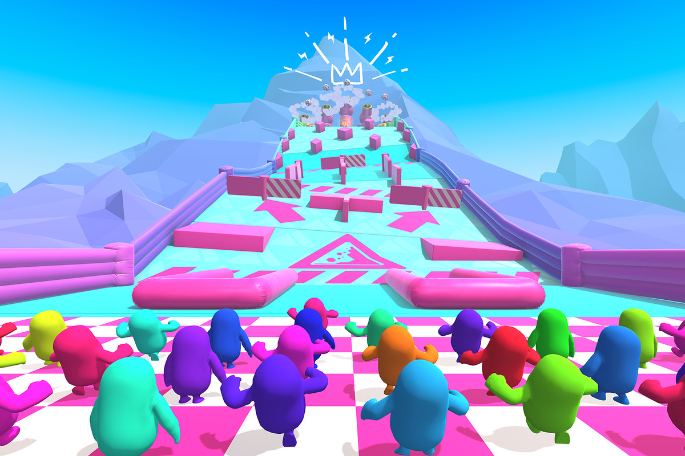
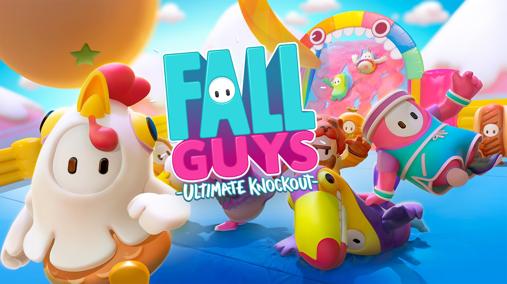
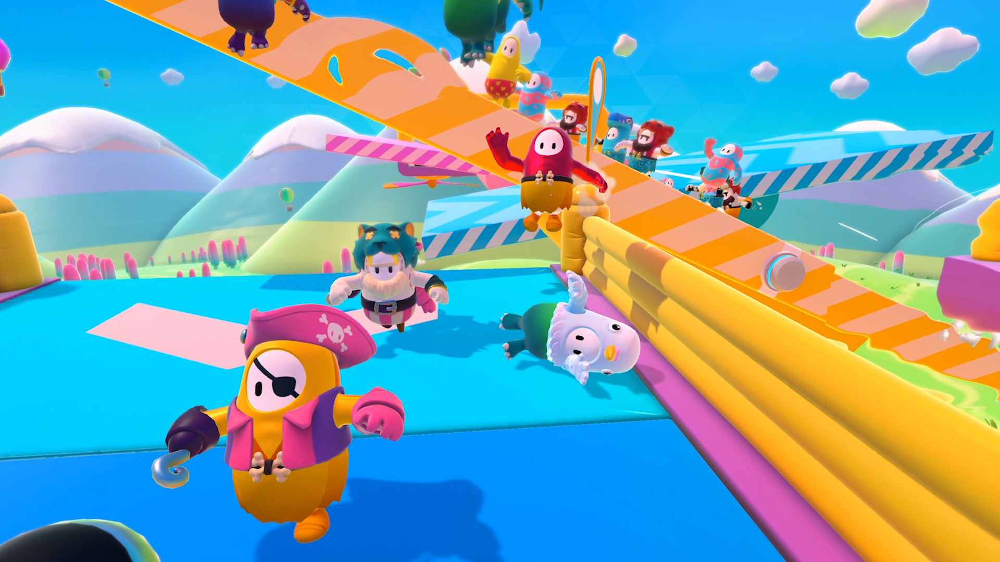
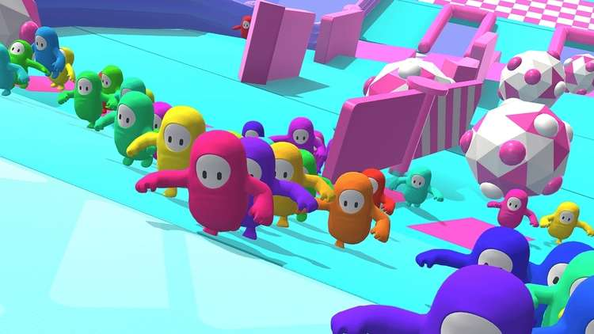
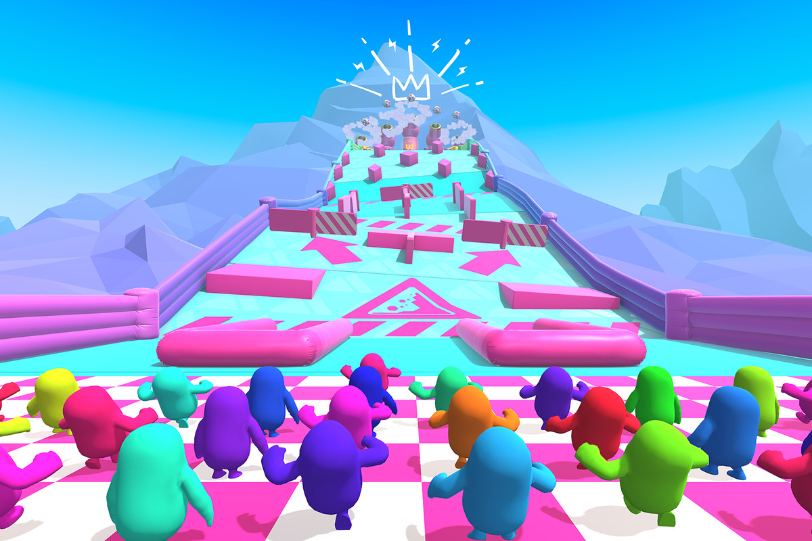
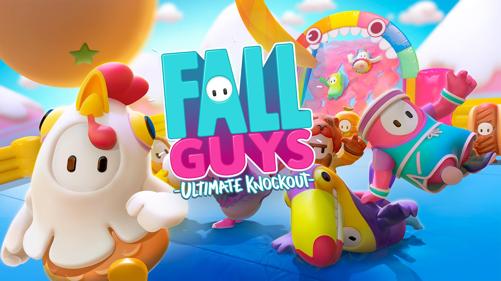
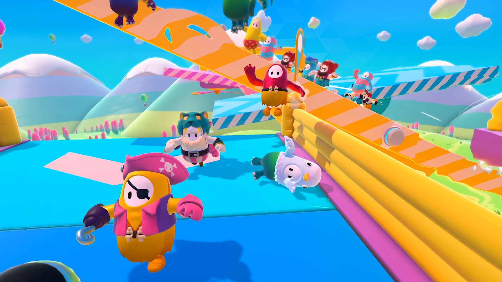
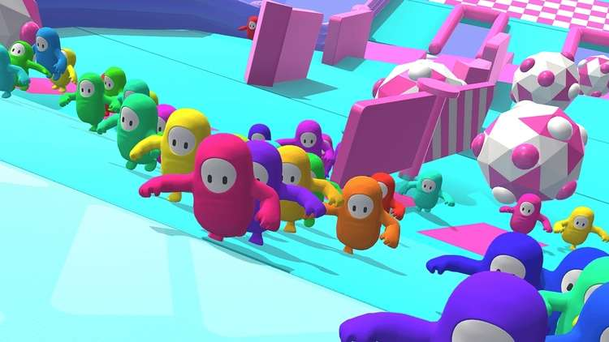

Fall Guys: Ultimate Knockout is een battle royale platformspel ontwikkeld door
Mediatonic en gepubliceerd door Devolver Digital. Het computerspel is
geïnspireerd door spelshows zoals Takeshi's Castle, It's a Knockout en Wipeout.
In juni 2019 werd het aangekondigd op E3. Op 4 augustus 2020 werd het
uitgebracht voor Microsoft Windows en de PlayStation 4.
Maximaal 60 spelers strijden tegen elkaar in battle royale competities. Spelers worden vertegenwoordigd door jellybean-achtige figuren en weergegeven vanuit een derde-persoonsperspectief. Elke wedstrijd bestaat uit 5 rondes en duurt in totaal maximaal 20 minuten. Het doel van elke ronde is om je te kwalificeren voor de volgende ronde door alle willekeurig gegenereerde minigames te voltooien.